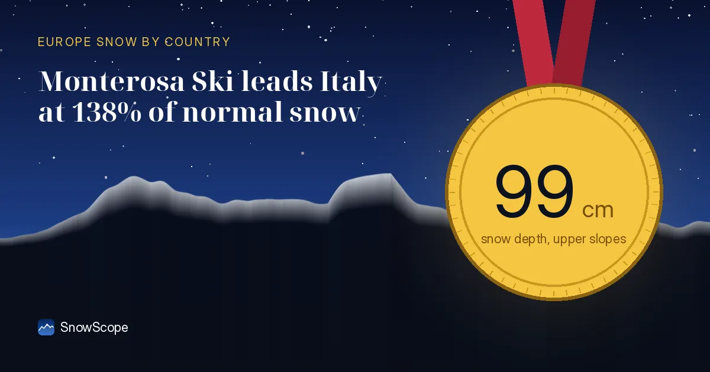

Monterosa Ski leads Italy at 138% of normal snow
Monterosa Ski holds 99 cm of snow, running at 138% of a normal mid-November. The Aosta Valley resorts are dominating Italy's Alps by a wide margin; below 1700 metres, the country is still mostly bare.
See the live snow forecast for Monterosa Ski in the SnowScope appSnow depth, powder alerts and the 3D map, free.
Monterosa ahead of normal – the angle
Monterosa Ski's 99 cm depth is unusual for mid-November. In a typical year at this point, the resort would hold about 13 cm. At 138% of normal, it is 38% ahead of the benchmark, an encouraging sign this early. This is not unique to Monterosa. Of the five main Italian resorts we track, three are running ahead of their historical average for this date.
Monterosa leads by a wide margin, but it is not alone. Valtournenche and La Thuile ski, both in the Aosta Valley, also exceed their November norms. Schöneben in South Tyrol lags below normal for now, as does Macugnaga in absolute terms – though Macugnaga's low baseline (usually just 12 cm in mid-November) means its current 69 cm is still a remarkable 308% of normal. The group median is 113% of normal, so across the board, Italy's main ski areas are off to an early start.
| Resort | Today | Normal for the date | Share of normal |
|---|---|---|---|
| Monterosa Ski | 18 cm | 13 cm | 138 % |
| Valtournenche | 15 cm | 15 cm | 100 % |
| Macugnaga | 37 cm | 12 cm | 308 % |
| La Thuile ski | 26 cm | 23 cm | 113 % |
| Schöneben | 10 cm | 18 cm | 56 % |

November is not usually a snow month
For perspective: Monterosa's historical best months are 11, 12, and 9, that is late March, March, and early March. November is a waiting period. By mid-November in past years, Monterosa averaged 13 cm and Valtournenche 15 cm. Today, they hold 99 cm and 80 cm respectively. Those are seven-fold and five-fold surpluses.
Early season snow is thin and can mask rocks, so caution is wise on steeper slopes. The week-ago picture shows snow was already climbing then, so this is a sustained early spell, not a one-day storm.

Aosta Valley's 62 cm in 72 hours dominates
The Aosta Valley grabbed 62 cm of snow in the past 72 hours, the strongest accumulation in Italy for that period. The Piedmont Alps, which include Monterosa's zone, received 25 cm in the same period; the central Apennines 23 cm.
Tomorrow, 17 November, is the heaviest snow day of the week: up to 25 cm is forecast in the best areas. Over the next three days, Monterosa will accumulate roughly 31 cm, while La Thuile ski (Aosta Valley) is headed for 87 cm, by far the highest total in Italy for this forecast window. This is a western Alps affair, with the high passes taking the brunt.
Seven-day outlook – heavy snow this week, possibly more next
Up to 50 cm is possible in the next three days. The seven-day maximum stands at 75 cm. Beyond that, around 24–30 November, another 32 cm may arrive, though confidence decreases the further ahead we forecast.
Only 123 of Italy's 237 tracked resorts report any snow at all currently, so the ski-able terrain remains narrow.
Snow lives above 1700 metres – the altitude band picture
The snow line sits at 1700 m today. Below that, rock is showing. The 1000–1500 m band has 11% cover and negligible depth. The 1500–2000 m band improves slightly: 56% cover and 1 cm mean depth.
At 2000 m and above, the picture shifts: 89% cover and 5 cm mean depth. At 2500 m and above: 99% cover and 17 cm mean depth. Tomorrow's 25 cm will fill the zone above 2000 m but is unlikely to lower the snow line significantly on a single day.
Overnight loss is normal; the week shows overall retreat
Snow-covered area fell by 320 km2 since yesterday, a 1.5% retreat. Over the past week, the total is down 1280 km2, a 5.7% loss from 22,490 km2 seven days ago. This is a normal seasonal shrinkage for this latitude and time of year.
The national white share stands at 23% of the modelled Alps. Monterosa Ski's 99 cm represents nearly one-fifth of the total snow depth measured across our five benchmark resorts.
Tips for skiers
- Head to Monterosa, Valtournenche, or La Thuile ski if seeking the deepest snow: 99 cm, 80 cm, and 64 cm respectively. Tomorrow's heavy fall will boost all three further.
- Stay above 2000 m elevation. Below that, cover is patchy and rocks are a hazard on steeper terrain.
- The Aosta Valley received 62 cm in 72 hours; some slopes there may show signs of instability. Check the official avalanche bulletin before going off-piste.
- Wednesday 17 November is the heaviest snow day this week (25 cm possible in the best areas). Time your visit accordingly if you want fresh lines.
- Watch for the second snow spell around 24–30 November (up to 32 cm). It may widen the ski-able band if it arrives on schedule.
About these numbers
Resort snow depths are the deepest snow on the resort's upper slopes from the SnowScope snow model (about 1 km, run of 16 November); they are estimates for an area, not a measurement at one point. Station values are measurements on the date shown. Forecasts can change. Always read the official avalanche bulletin before going off-piste.
Cite this report
For research, teaching or the press: the numbers and charts are free to reuse under CC BY 4.0 with this citation.
SnowScope (2026), Monterosa Ski leads Italy at 138% of normal snow, https://snowscope.app/blog/en/2026/11/italy-snow-report-16-november-2026.html, accessed 2026-11-16
SnowScope (Atlas Labs). (2026, November 16). Monterosa Ski leads Italy at 138% of normal snow. SnowScope snow reports. https://snowscope.app/blog/en/2026/11/italy-snow-report-16-november-2026.html
BibTeX
@misc{snowscope2026italysnowreport16novembe,
author = {{SnowScope (Atlas Labs)}},
title = {Monterosa Ski leads Italy at 138% of normal snow},
year = {2026},
month = nov,
howpublished = {\url{https://snowscope.app/blog/en/2026/11/italy-snow-report-16-november-2026.html}},
note = {Published 2026-11-16 20:42 UTC; accessed 2026-11-16}
}· CC BY 4.0 · Methods, data and tools →
Monterosa Ski: snow and temperature by height, this winter vs last (tools) →
Follow Monterosa Ski
Free: a message when fresh snow is coming, and the forecast every morning.
More snow reports

On 13 November 2026 the weather stations in Stockholm and Helsinki measured 0 cm of snow while Sälen had 45 cm and Umeå 20 cm. Height, the sea, the city and the track of the storms explain it, with numbers from 46 past winters.

Steamboat, Colorado, for families: what works for toddlers, school-age kids, teens and parents, with the snow of 46 past winters at three heights.

Puy-Saint-Vincent pairs a 44 EUR adult 1-day pass with solid December snow higher up, compared here with its big neighbour Serre Chevalier.